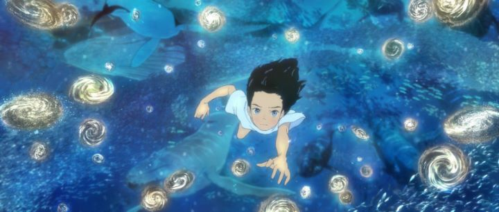

"The sea is the mother..."Anyone who knows my taste knows how much I appreciate Studio 4C, the anime studio unlike any other studio. Their work isn't like Studio Ghibli or Kyoto Animation, Madhouse or Production I.G. With them, animation and design is wholly unique. And focusing on feature films, they release new stuff so infrequently, that it's a special occasion whenever they do. Hence, I was looking forward 2019's feature film "Children of the Sea," based on the award-winning manga of the same name. My interest was further peaked when reviews all seemed to agree: "it's beautiful, but weird."They story is basically a coming-of-age story of adolescence, taking place over one summer. Ruka is a young girl, talented, but struggles to get along with others (in early scene shows her getting in trouble for elbowing someone in a sports match at school), perhaps brought on by her divorced parents, and living with an alcoholic mother (who otherwise still seems to care for her; no specific abuse is portrayed to suggest why they don't get along). Running to the local aquarium to spend time with her marine-biologist father, Ruka discovers their secret specimens. Two specific men. Or boys, rather. Umi, and a brother Sora, were discovered living in the sea among the fish, and their livestyle makes them unaccustomed to human life on land, or dry air in general. Otherwise, they're seemingly peaceful and cooperative for the scientists to learn more about them. And upon meeting Ruka, they hang out on occasion, and Ruka learns more about herself and the mysteries of the sea. That's all fine, if a little dull. I never liked those types of coming-of-age stories, finding revisiting the feelings as depressing and trivial when looking back as an adult. The first chunk of the movie seems to struggle with finding an identity beyond the original manga too... despite not having read the manga, I could clearly see breaks in the film where a chapter would have ended. And events seem to be vague and random, with side-characters being introduced to say cryptic lines about the mysteries of the universe, some deep, and some corny. Up to the halfway point, it's not particularly confusing or dense, like the reputation would suggest. It's just vague. ... but everything gets thrown out in the water in the second half. After multiple allusions and foreshadowing about some mysterious "ceremony" to occur in nature in the middle of the ocean, we see it happen, with Ruka, Umi and Sora at the center of it all. It's a rush towards a climatic destiny, depicting nothing less than the literal birth of stars, the universe, of life, and the sea, all interconnected as one great cosmos of being. Of course, it's an on-the-nose allegory to explain how important you are, that you are worthy as an individual, "your body is literally made up of the same stuff as stars from the Big Bang," and all that. In comparable, better films, like "Mind Game," the visual fireworks complement genuine and complex themes about the human condition that couldn't be conveyed with words alone. In "Children of the Sea," it's the other way around, where the story seems to serve as an excuse to portray a magical scene of creation.But was it worth it? Yes. As the movie gets increasingly experimental, the fantasmic visuals and accompaying musical score are rapturous. Paired with a basic story, it's exactly the sort of thing that proves that animation is art, the stuff that'd make film festival audienced give a standing ovation, the type of film GKIDS would be proud to bring to American audiences. It's a bit difficult to explain exactly what happens, or to explain the ending, or dismissal of one (even Ruka's last lines are "I don't understand").  Visually, the movie takes great pains to recreate the odd-looking art from the original manga. And for the most part, it succeeds. It's not always traditionally "pretty," but's wholly original. There is a unique beauty in the pencil-outlines of characters and ultra-detailed eyes, and in wrinkles and lines that make lips seem dry. Of course, water and fish get more attention, and the visuals in the more experimental scenes are beyond description. The amount of detail and color in any individual scene is luxurious, and the film even uses an ultra-wide aspect ratio to enhance the way it appears. Despite the visuals, I was oddly disappointed by the actual animation of it. Clearly, a lot of work was required, but I remain unconvinced that "Children of the Sea" actually need to be rendered in film, rather than just a comic. It's an odd thing to feel, as I typically feel the exact opposite, especially with Japanese manga, but the actual motion of what I saw on screen didn't seem to match The most notable thing might be the integration of 2D and CGI this time around: Studio 4C has relied more and more on CGI in the past decade, usually not even trying to combine the two seemlessly (despite otherwise maintaining a sense of quality). In this movie, there are some inconsistencies (there are several distinct visual styles to how water is rendered, with scenes appearing as though they come from different movies), but more importantly, they do indeed blend well with 2D elements. Therefore, the animation here might be their best on a technical level, just not on an artistic level. The music was composed by Joe Hisaishi. Yes, THAT Joe Hisaishi, the guy who composed most of Studio Ghibli's films from its inception. After all, Ghibli had shut its doors several years earlier, and it makes sense that he'd seek work somewhere; an auteur studio's adaptation of an acclaimed manga fits him, even if it was a one-off experiment. Indeed, his presence on the production team was almost more significant than the director, both in the minds of the team itself and the press. As expected, he provides a few beautiful theme songs that give an identity, vaguely like the mysterious soundtrack of "My Neighbor Totoro," and the music in Pixar films like "Finding Nemo" by Thomas Newman. Even though it's in a league above most anime tracks, it isn't my favorite of Hisaishi's work, but perhaps this is due to the visuals that accompany it. GKIDS provided an English dub, which works fine, although the Japanese dub seemed much more powerful (inversely, reading subtitles means missing out on the visuals or not being able to think as long about each line, ruining the purpose). GKIDS also included a bunch of special features on the Bluray disc release, including interviews with the directors, with the composer, detailed animation and storyboard making-of videos, a feautre-length mock-documentary about the mysteries of the ocean, and a lot more. There was originally a bit of controversy with the studio regarding overworking without overtime pay, but by 2020, that appears to be largely forgotten or forgiven, in favor of celebrating the work accomplished here. I didn't fall in love with "Children of the Sea," but it really is an event in the animation industry that simply must be seen by everyone. It's a shame the animation wasn't a little better, and that the story didn't live up to the mysticism from the otherwise original ideas... if they had, this movie could have changed lives. It's almost scary to think of that type of power.
- "Ani" More reviews can be found at : https://2danicritic.github.io/ Previous review: review_Chico_and_Rita Next review: review_Children_Who_Chase_Lost_Voices